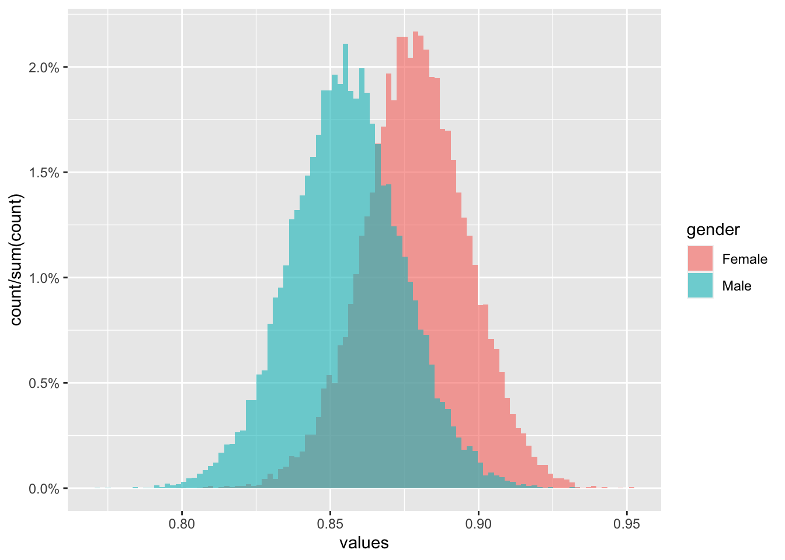
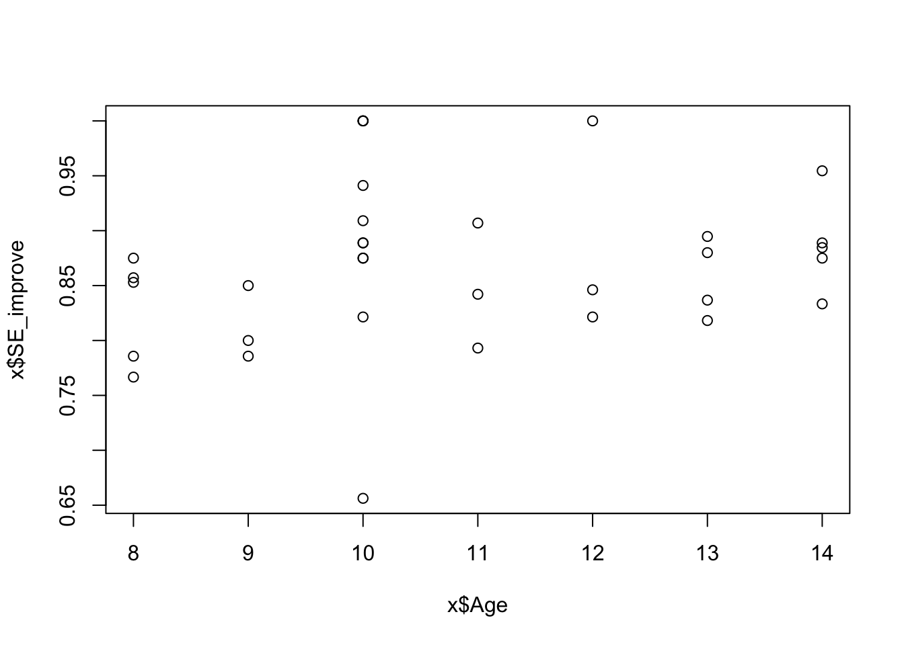
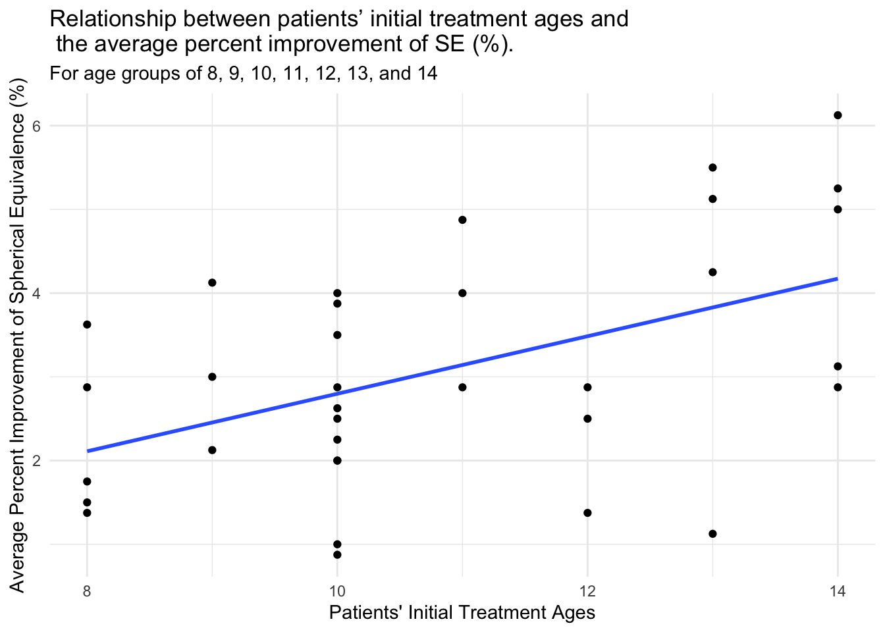

Models
Hypothesis
Null hypothesis: there is no correlation between patients’ initial treatment ages and the percent improvement in SE (%).
Alternative hypothesis: there is a correlation between patients’ initial treatment ages and the percent improvement in SE (%).
Calculations
Initial SE (D): \[SE_i = SPH_i + 1/2CYL_i\]
Processed data table
# A tibble: 7 × 2
Age SE_avg_imp
<dbl> <dbl>
1 8 0.827
2 9 0.812
3 10 0.896
4 11 0.847
5 12 0.889
6 13 0.857
7 14 0.887Correlation Model
Call:
lm(formula = x$SE_improve ~ x$Age)
Residuals:
Min 1Q Median 3Q Max
-0.205855 -0.052370 -0.001803 0.026784 0.137895
Coefficients:
Estimate Std. Error t value Pr(>|t|)
(Intercept) 0.793127 0.070447 11.259 1.15e-12 ***
x$Age 0.006898 0.006404 1.077 0.29
---
Signif. codes: 0 '***' 0.001 '**' 0.01 '*' 0.05 '.' 0.1 ' ' 1
Residual standard error: 0.07328 on 32 degrees of freedom
Multiple R-squared: 0.03498, Adjusted R-squared: 0.004827
F-statistic: 1.16 on 1 and 32 DF, p-value: 0.2895Warning: `as.tibble()` was deprecated in tibble 2.0.0.
ℹ Please use `as_tibble()` instead.
ℹ The signature and semantics have changed, see `?as_tibble`.

Model: \[y_i = \alpha*Age + \beta*Gender\] ## Pearson
When considering the relationship between the two factors, Pearson’s correlation coefficient and Spearman’s ranking order correlation coefficient are the most common tools. Pearson’s test is best used when there are no outliers in the data (Kent State University, 2021), whereas Spearman’s test is most accurately used when the data has significant outliers. According to Table 5, there are no outliers in this set of data. Therefore, Pearson’s test is chosen.
Call:
lm(formula = x$SE_d ~ x$Age)
Residuals:
Min 1Q Median 3Q Max
-2.7036 -0.7824 -0.2197 1.0224 1.9528
Coefficients:
Estimate Std. Error t value Pr(>|t|)
(Intercept) -0.6376 1.1878 -0.537 0.59513
x$Age 0.3436 0.1080 3.182 0.00325 **
---
Signif. codes: 0 '***' 0.001 '**' 0.01 '*' 0.05 '.' 0.1 ' ' 1
Residual standard error: 1.236 on 32 degrees of freedom
Multiple R-squared: 0.2403, Adjusted R-squared: 0.2166
F-statistic: 10.12 on 1 and 32 DF, p-value: 0.003249
Pearson
When considering the relationship between the two factors, Pearson’s correlation coefficient and Spearman’s ranking order correlation coefficient are the most common tools. Pearson’s test is best used when there are no outliers in the data (Kent State University, 2021), whereas Spearman’s test is most accurately used when the data has significant outliers. According to Table 5, there are no outliers in this set of data. Therefore, Pearson’s test is chosen.
Pearson's product-moment correlation
data: x$Age and x$SE_d
t = 3.1817, df = 32, p-value = 0.003249
alternative hypothesis: true correlation is not equal to 0
95 percent confidence interval:
0.1822791 0.7105921
sample estimates:
cor
0.4902269 If the coefficient > 0, then there is a positive correlation. Which is, by increasing one value, the other value also increases. If the coefficient < 0, then there is a negative correlation, meaning by increasing one value, the additional value decreases.
Here, the r-value is 0.4902269, which is greater than 0. Since this value is between 0 and 0.5, it is considered a weak positive correlation.
Although it is suggested that there is a weak positive correlation between two variables, we still nedd to examine its statistical significance, that is, whether the relationship with this sample exists in the population (University of Connecticut, 2009). A significance level (α) is chosen to be 0.05, meaning at least 95% times the relationship exhibited in this sample also exists in the populations (University of Connecticut, 2009). Since the p-value is 0.003249, which is smaller than 0.05, the relationship is statistically significant. Therefore, the alternative hypothesis is accepted.